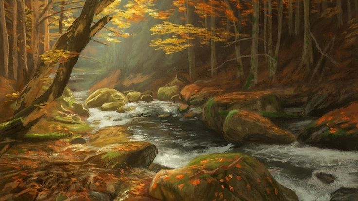
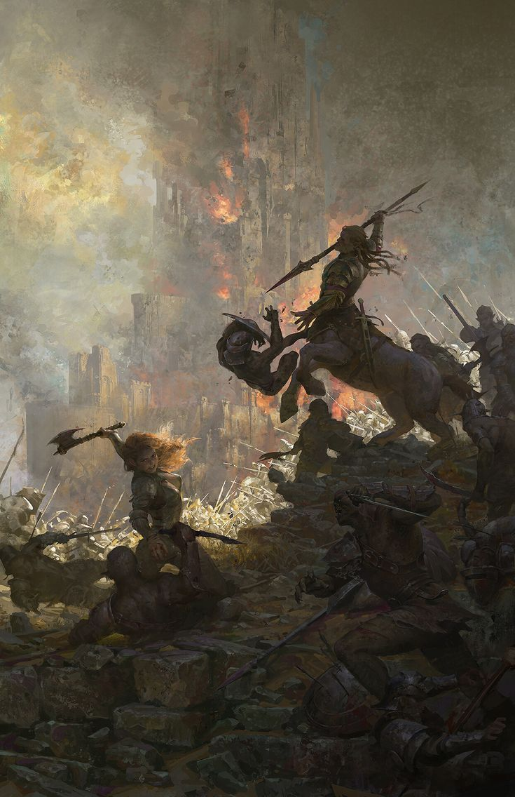
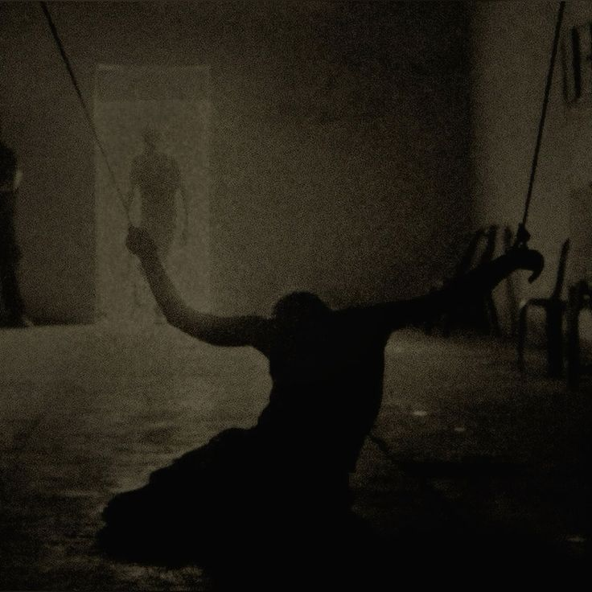
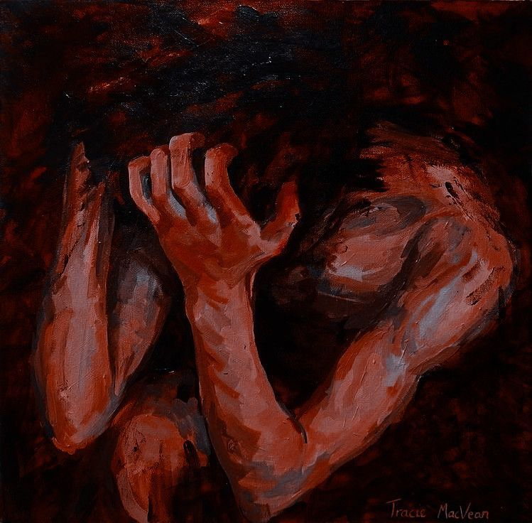
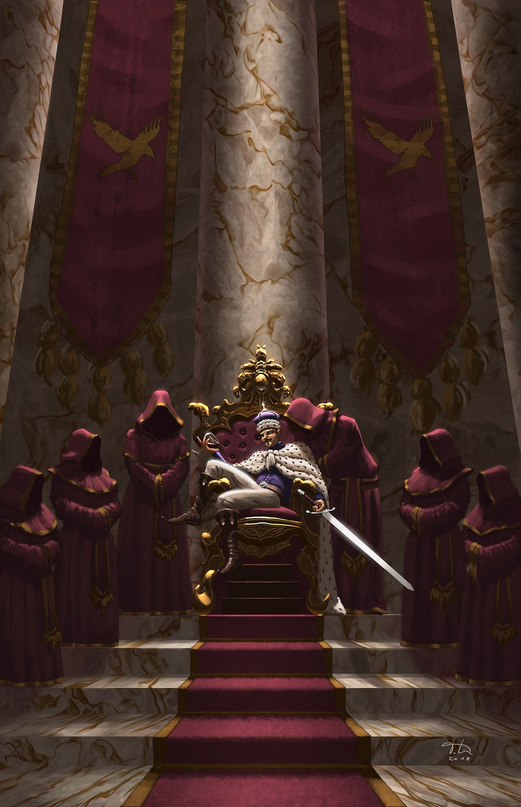
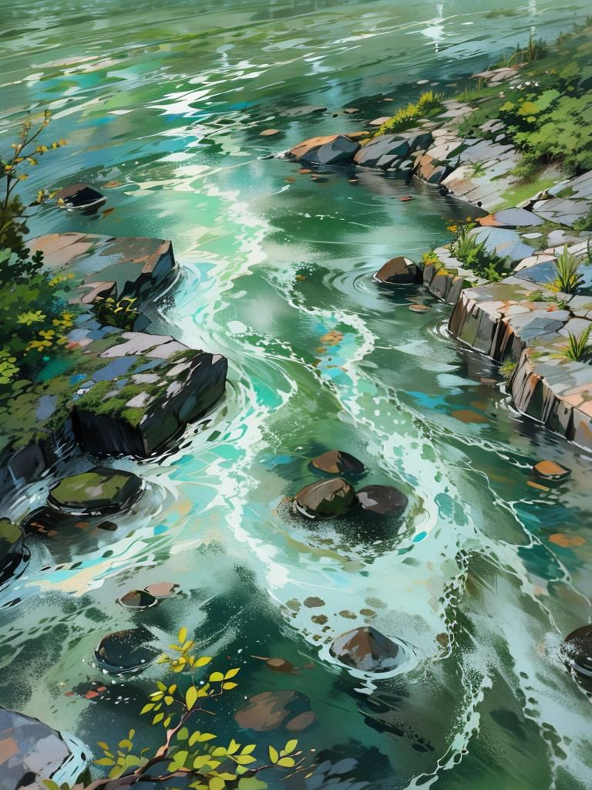

История Шесть
Глава первая: Растущее будущее

✦ Рыжие леса Тругиля — место, где собираются множество разных народов ✦
Центральный регион не завоёванных земель, Леса Тругилия или же Рыжие леса Тругилии, место где жили множество видов зверолюдей, разных особенностей и культур, и где то в глубинке этих лесов, возле большего озера в давние времена была создано заячье поселение, вскоре выросшее чуть ли не одно из самых больших деревень этих лесов, что в свои лучшие могли соперничать по воинственности даже с хищниками. Ныне, деревня была частью большой сетью деревень, у которой был достаточно весомый голос на совете этих самых деревень. Имея большую численность население и достаточно хорошо развитое сельское хозяйство, деревня вечно росла и расширялась. В эти времена мирного рассвета после военных шествий, у Главы семьи, которого большинство ласково называли "Вожак", родилось потомство, из практически двух десятков ребятишек и одна из них отличилась даже при рождении, что изначально её восприняли как мальчика, который не так родился.
Девятый · Сын брата Вожака
Пирр — чувство справедливости и защиты бурлит сильнее всего в его душе, от чего и получал в детстве больше всего.
Пирр — чувство справедливости и защиты бурлит сильнее всего в его душе, от чего и получал в детстве больше всего.
Мирное время, детишки начали расти, мальчишки начали вырастать в будущих воинов, что защищают деревню, а также девочек, что были более маленькими версиями мальчиков, от чего и становились домохозяйками и матерями... Ну, это было у большинства, кроме "неё". Родившись с врождённым гигантизмом и получившее говорящее имя "Элеутерия", означающий свободу выбора и пути в жизни, её сделали особенной в деревне, ей дали полную свободу выбора в жизни, становлением воином, матерью или даже претендовать на роль главы деревни, но в детстве она лишь развлекалась и радовалась каждому дню вместе со своими друзьями и родственниками, оставляя столь значимый выбор на будущее.
Шестая · Дочь Вожака
Элеутерия — «свобода». Имя, которое стало шуткой судьбы. Свободная по рождению, рабыня по жизни.
Элеутерия — «свобода». Имя, которое стало шуткой судьбы. Свободная по рождению, рабыня по жизни.
Пока в один на удивление дождливый день, в деревню не пришли приключенцы, что просили еды, тепла и крова, не за бесплатно. Положительный ответ со стороны "Вожака" не стал долго ждать и приключенцы начали жить неподалёку от дома главы. Оставаясь жить в столь большой деревне, было трудно не привлекать внимание, особенно, когда компания приключенцев была максимально разносторонней не только роду деятельности, но и расам. И понемногу к ним начала тянуться детвора, любопытствуя и интересуясь жизнью за Лесами. В моментах игры и забавы переменились на сидения у кострища и выслушивания историй от их Барда-человека, который через мелодии и знанием их языка передавал приключения команды. Всё внимание детворы было приковано к ним, в особенности самой большой из них, что на свой малый возраст выглядела как уже взрослая зайчиха, её внимание была почти полностью украдено жрицей-эльфом и магом-орком их красотой магии, её полезности, а главное особенности. Прошло время и наступил момент ухода приключенцев из деревни, они задержались дольше необходимого как раз таки из-за ребятишек, не желавшие их отпускать пока те не расскажут все их истории и пока "Элеутерия" не вкусит благи магии и божественного чуда. И всё-таки, без этих людей деревня стала будто тише и грустнее...
Продолжать жить в тишине и грусти после ухода приключенцев, было бы неправильно и дети решили, что им тоже нужна их собственная команда приключенцев и начали игры пышнее прежних, теперь у каждого были свои роли, свои цели и свои вдохновители образов. Команд было много, около семи, и большая зайчиха попала в первую, как та, кто из первых предложила так играть. Состав первой команды состоял из целых двенадцати зайцев, хотя в остальных было больше. "Элеутерия" могла бы стать лидером в первой команде, но решила отдать этот пост сильнейшим по силе зайцам, старшим трём братьям и двум старшим сёстрам, оставив при себе шестое место отыгрывая роль жрицы. Остальные заняли числа от семи, до двенадцати, деля и даже копируя роли друг друга. Так и началась более задорное и радостное детство, продлившееся вплоть до подросткового возраста, где роли стали негласными именами между друг другом, а простые игры перешли в серьёзное обучение.
Двенадцатый · Сын брата Вожака
Ликург — сильный для своего возраста, шустрый, немного глупенький, но очень дружелюбный.
Ликург — сильный для своего возраста, шустрый, немного глупенький, но очень дружелюбный.
Как только начал наступать возраст согласий и поиска партнёров, компания друзей и родственников продолжала следовать своему детскому делу, некоторые уже могли с гордостью держать меч в руках, другие стрелять из лука, а некоторые даже колдовали и сотворяли чудеса, что и не отличило от других "Элеутерия", которая уже могла с помощью базовых молитв восстанавливать самые простые раны, небольшие головные боли и убирать усталость. Всё шло прекрасно, деревня продолжала расцветать, рождались новые детишки, территории для жилья так же увеличились... Как и начали наступать новые проблемы. Совет деревень травоядных созвал сборы добровольцев для подготовки к конфликту с деревнями из хищного совета, что оказывается изначально отделились от основного Совета и решили забрать к себе во владение более слабыми деревнями. Фактически, в конфликте участвовали большинство травоядных и малая часть хищников, но опасность для первых была очень даже большой и именно поэтому деревня зайцев ответила Совету согласием на участие в данном конфликте и начались сборы добровольцев. Первые кто ответил, как добровольцы была та самая компания, состоящая из двенадцати зайцев, которая всей своей душой и сердцем хотели получить приключения и опыт. Через небольшие споры и разногласия со стороны "Вожака", команда смогла получить добро.
Четвёртый · Сын Вожака
Данакт — волевой и забывчивый, никогда не отходит Дакада и старается быть как он.
Данакт — волевой и забывчивый, никогда не отходит Дакада и старается быть как он.
Глава вторая: Обжигающая цель

✦ Первая битва — начало пути ✦
Вот и наступил день отправки... Волнительный, страшный и завораживающий опыт сразу окутал всю команду, по дороге вместе с другими добровольцами, команда была на своей волне, они были как белые вороны, что даже умудрялись своей радостным настроем заражать других и весь путь до основных войск был в пениях и забавных историях... Пока они не прибыли, где уже началась подготовка к войне, там были множество и других травоядных рас, такие как Гиффы, черепахопобные и малые расы по типу сусликовых.
Подготовка шла быстро и строго, что не помешало команде оставаться в оптимистическом настроении, ведь их команде, как и ещё небольшой команде из сусликов, стать разведчиками и пытаться напасть на врага с тыла. Как только подготовка была завершена, все части армии начали действовать как слаженный и простой механизм без излишков, но с малыми ошибками. Война началась.
Восьмой · Сын Вожака
Влас — немного загадочный, не открывается всем, но зато очень милый и душевный в нужной компании.
Влас — немного загадочный, не открывается всем, но зато очень милый и душевный в нужной компании.
Команда зайцев отправились в глубины тыла врага, оставив сусликов как разведчиков для передачи информации. В тылу было неспокойно, и команда была очень аккуратна в своих действиях, сначала просто прослеживая, а после и оценивая количество и качество врагов... Что были не совсем жителями этого Леса, гиеноподобные работали в союзе с некоторыми Леонинами, казалось, что это должна была быть какая-то сговорённость с основной силой Львов, но это были либо изгнанники, либо наёмники, что были у попечительства других, пока неизвестных для команды. Используя ночью свои способности скрытности, попасть в дома командиров, было не проблемой, как и украсть письменные планы ведения войны. Обычная и простая ошибка, привела хищников к поражению, достаточно быстрому, что никто из врагов не успели среагировать правильно, крови со стороны травоядных было не много, особенно идеально показали себя команда зайцев, что выкрав планы, фактически расчистили путь до победы, только... Это на самом деле было только начало. Начало того, что для Армии союза деревень наступило время внезапной атаки со стороны, точнее даже с тыла, ведь было несколько направлений, которые начали приводить к внезапному хаосу среди травоядных. Тем временем, команда зайцев, была готова к отступлению или же стыковой битве, пока, они так же не осознавали, что просто покинуть вражеский уничтоженный лагерь было испытанием.
Десятая · Дочь брата Вожака
Анфиса — увидевшая в отличии от меня красу не в магии и её результате, а в процессе и смысле, немного заносчивая, но всё так же добрая.
Анфиса — увидевшая в отличии от меня красу не в магии и её результате, а в процессе и смысле, немного заносчивая, но всё так же добрая.
Шло время... Сама первая война пролилась лишь пару месяцев, вторая же внезапная длилась уже практически полгода. Травоядные приняли оборонительную позицию на старой вражеской территорией, война длилась достаточно долго, чтобы еда начала просто кончаться, только вода оставалась в доступе, но этого было мало. Пока шла блокада, команда зайцев всё время вместе с другими разведчиками пытались покинуть это место, но результаты не увенчались успехом и даже внезапными потерями, двое из команды зайцев покинули этот мир, когда в них попали отравленными стрелами. "Шестая" не могла справиться с ранеными и пострадавшими, как и другие жрецы в армии травоядных. Медленно, боевой дух падал, так же, как и силы на сопротивление... Да и враги не особо пытались прямо нападать будто специально вытягивали жизненные силы из воинов, которых постепенно становилось всё меньше и меньше. Пока и вовсе сопротивляться почти никто уже не мог, а тех, кто продолжал или убивали, или показательно пытали перед другими. Падение объединённой армии травоядных, привело Совет деревень в боевую готовность, что продолжали вести войну, но первая армия всё равно пала. Остатки первой армии были завоёваны и отправлены в рабство, как и команда зайцев, что уже поредела после блокады.
Первый · Старший сын Вожака
Никон — быстрый, сильный, ответственный как будущий глава!
Никон — быстрый, сильный, ответственный как будущий глава!
Глава третья: Сломленное будущее

✦ Таррах Мор — земля, где умирают надежды ✦
Команда зайцев была продана на землях Таррах Мора, но покупателей было двое, от чего команда разделилась, но разделилась слишком неравномерно, ведь одна была выкуплена одним, а остальная выжившая девятка другим, таким образом Вторая смогла уйти от участи ада остальной команды. Покупателем остаток команды был один очень влиятельный и жестокий человек, руководящий подпольными боями на смерть, видящий в рабах только монеты и способ удовлетворить свои скрытые извращённые желания. Каждому был присвоен номер, по совпадению, почти все получили номер такой же какой у них был при играх и в их команде, лишь десятая и двенадцатый, которые получили номера девятая и десятый соответственно, место второй никто не занял, он был оставлен как лучик света или же... Один из способов морального унижения выживший. Начались издевательства, сначала попали под удар женская часть команды, где по мимо насилия были унижения, голод и даже бои, где победителя награждали едой и вновь насилием. Мужская же часть не ушла далеко от женской, отличия были в тяжести и количества издевательств. Единственная отличилась от всех, это была "Шестая", она была слишком необычна для её "Хозяина", высокий рост, не малые формы и слишком строгий и непокорённый взгляд. В отличии от других, она была одна, ей не давали встречать других, пытки, переходящие от насилия до издевательств, стало самым обычном делом на каждый день её жизни. Участие в подпольных боях со стороны большой крольчихой было не редкостью, даже частым явлением. А смысл продолжать сражаться был в виде жизни её братьев и сестёр, создание иллюзии жизни... Пока не начались первые проигрыши "Шестой", именно в эти моменты в её комнату начали приносить изуродованные головы, первый был десятый (Ликург). И после этого моральное состояние зайчихи начал не просто падать, а хрустеть и ломаться, победы стали смыслом жизни...
Третий · Сын Вожака
Дакад — немного строгий, но ласковый юноша, вечно главное лицо команды.
Дакад — немного строгий, но ласковый юноша, вечно главное лицо команды.
Так продолжалось годами, отличия были лишь тогда, когда Зайчиха арендовалась другими извращенцами, то использовалась как козёл отпущения и попадала в пыточною по поводам и без, и даже пару раз могла увидеть живых родственников. Поражения в боях были как иглы в сердце для Шестой, таким образом она потеряла Четвёртого (Данакта), Восьмого (Власа), Девятую (Анфису)... И так было не долго, ведь после третьего поражения изменились и наказания, на этот раз пали сразу двое, Первый(Никон) и Третий(Дакад), их поставили против самой "Шестой", выдав той оружие, а двоим ничего и даже отравили, что бы те не смогли победить ни в каком виде, используя метки раба резня началась. Зайчиха, максимально сопротивляясь и испытывая мучения и боль двигалась, делая максимально простые выпады, дабы те могли как увернуться, так и ударить в ответ. Но, всё шло не так как хотела Шестая, так как последовал приказ в сторону парней, который заставлял тех попадать под клинок... Тьма, сознание Шестой затуманилось настолько, что она смогла очнуться в конце резни, стоя над своими братьями и окровавленным телом. Моральное состояние девы покинуло этот мир уже на этом моменте, под крики и возгласы людей, которые поддерживали данный бой, упавший клинок зайчихи был показателем ломкости, чем в момент начал пользоваться её нынешний "Хозяин". Начался процесс приручения.
Пятая · Дочь Вожака
Мелина — голос, что может проникнуть в самое сердце, успокоить или же взбодрить, само воплощения спокойствия.
Мелина — голос, что может проникнуть в самое сердце, успокоить или же взбодрить, само воплощения спокойствия.
Глава четвёртая: Потеря воли

✦ Когда сломлена душа — остаётся только пустота ✦
Последние выжившие сёстры так же, как и Шестая продолжали жить, хотя последняя не могла так же видеть их, продолжая оставаться в неведении о их состоянии. А вот сами сёстры знали, что и как происходило, как зайчиху шантажировали живыми сестрицами, учили ставить своё мнение гораздо ниже, чем у хозяина, даже если приказывает той не хозяин, боязнь ярости господина и делания таких вещей по собственной воли, что это начало сильно пугать выживших сестёр. Та самая арена с подпольными боями начала закаливать Шестую, и в моменте она даже забыла причину своего нахождения здесь, и для этого потребовалось лишь лет пять, чуть ли не беспрерывного ада.
Седьмая · Дочь брата Вожака
Ия — задиристая и воительная, всегда бежит вперёд, никогда не оставляет свои позади.
Ия — задиристая и воительная, всегда бежит вперёд, никогда не оставляет свои позади.
Для проверки преданности и приручения Шестой, одним из последних жестоких приказов было собственноручно убить последних уже практически не сопротивляющихся сестёр. Жестокий приказ, хладнокровные действия и безупречная работа. Последние мгновения жизни сестёр были... Пустыми? Они видели в своей сестре лишь утешение и конец пыткам, но для их спасительницы... Это было лишь половина пути, ведь всё остальное время она оставалась одна, выполняя приказы, продолжая быть игрушкой и отличным псом, который мог сделать всё ради своего хозяина.
Вторая · Старшая дочь Вожака
Синтия — краше неё были только звёзды, стройная, умная, добрая и живая...
Синтия — краше неё были только звёзды, стройная, умная, добрая и живая...
Глава пятая: Новое место, новые проблемы

✦ Аурем Вейл — столица, где царит вера и справедливость ✦
Непомерное количество времени прошло с момента, когда Шестая лишилась практически всех сестёр и братьев, знать, что Вторая жива она не знала, но и надежды на её нахождения у неё так же не было. Королевство Солантир, столица Аурем Вейл, место где царит вера и справедливость, Шестая попала в это место вместе со своим Хозяином, который держал ту в близи и заставил следить за округой как телохранитель, но по важным делам во дворце, Хозяину пришлось оставить Шестую и перед тем как покинуть её, отдал приказ быть полезной для города, по итогу по истечению времени та попала в добровольный отряд Самоубийц. Заведённая в помещение рабыня просто слушала и наблюдала за происходящим внутри, стараясь не реагировать на большинство, но когда начался тот самый небольшой балаган с Дварфом и Человеком, то даже заинтересовалась ими, но продолжала оставаться в стороне. По приходу Дроу, понять, что именно она была новым временным Хозяином, то последовала за ней, слушая её приказы. Встреча с её мужем никак не повлияло на неё, а вот увидеть своих младших сородичей в рабах... Было обычным делом.
Шестая · Элеутерия
С самого рождения... — «Свобода. Имя, которое стало шуткой судьбы».
С самого рождения... — «Свобода. Имя, которое стало шуткой судьбы».
Новый внезапный будущий друг был необычен, а их разговор с Каладаном, был немного абсурдным, от чего и особого внимания Шестой не привлёк. А вот большой мост, на котором предстоит битва немного заворожил, так же как и когда она прибыла в город. Начало битвы… Нежить стала лезть без продуха, Шестая встала для защиты временного Хозяина и пыталась спасать тех, кто падал, что у неё получалась достаточно успешно. Держаться долго на мосту не получалось из-за злопастных требушетов, от чего им пришлось отступать, вплоть до стен и после за них. Тот самый друг Каладана попал в беду, пришлось ему помогать. Появившийся в команде новый товарищ веселья не добавлял, особенно когда Шестая проходила мимо того самого места с крольчатами, не видя их, а только труп торговца рабами, внутри трепалась малая надежда, что они сбежали. Догнав группу, зайчиха продолжала в основе своей молча наблюдать и следовать за Биатрис. Пришедшая сильная нежить даже испугало деву, от чего она не могла выйти вперёд, смотря на то, как Каладан вышел и показал ка надо получать по лицу от сильного врага. Святая благодать и на помощь пришёл рыцарь с крыльями, что позволил команде сбежать, жаль, что его труп с грохотом прилетел в башню стен у дворца.
Неизвестный рыцарь
Сильный, но пал так легко… — «Его смерть была не напрасна. Мы живы».
Сильный, но пал так легко… — «Его смерть была не напрасна. Мы живы».
Пойдя во дворец, а после в тронный зал, дева не удивлялась всей красе этого места, как и его кровожадности и смети, обыскивая трупы рыцарей и найдя несколько простых предметов, Шестая продолжала следовать за Биатрис, что нашли путь под троном в Древние катакомбы, где… Был встречен Король королевства, предавший живой народ ради бессмертия. Только предвкушал проигрышный бой, как внезапно на помощь пришёл Пак, муж Хозяйки, что благодаря своей жертве толи победил, толи изгнал врага. Оставшись в этом месте в окружении камней и остатка нежити, Траин, благодаря своей смекалке и проворству переместил всех... Куда-то к богу.
Шестая
Ох… Святаностная Лучита… Это, вы? Нет… — «Призыв к богу был воспринят, как послание через другого».
Ох… Святаностная Лучита… Это, вы? Нет… — «Призыв к богу был воспринят, как послание через другого».
Глава шестая: Вода… И ещё раз Вода

✦ Вода — начало нового пути ✦
После перемещения от бога, падая в воду, Шестой не очень повезло, ведь тут же начала то тонуть, то ударятся о скалы, пока та вовсе не уплыла за взоры своих временных соратников. Если бы не Совлин Клер, то вероятнее всего зайчиха бы улетела вовсе вниз водопада. После воды встав на ноги, деве было трудно двигать руками, ведь обеих она умудрилась отбить, но благодаря Балсмегу и его повязке боль утихла, но всё ещё зудела и пульсировала. Выйдя дальше по тропинке и замечая следы жизнедеятельности в виде срезанных грибов, команда стала более бдительной, и Зайчиха скрылась за деревьями для того, чтобы выследить из укрытия куда они направляться и видя лагерь перед собой, то следила за странным Тифлингом, что охранял это место. Пока не вышла Биатрис и Каладан, что так же заставили выйти и Шестую, показав себя. Костёр, устроившись рядом с ним и получая заветное тепло после холодной реки, человек-паладин подошёл к зайчихе, дабы помочь той справиться с болью в руках, хоть и не с первого раза. Сидя в тишине и относительной безопасности, а также получив немного еды от Хозяйки, что уже стала в глазах Шестой полноценно, она восстанавливалась.
Шестая
Новый хозяин? Старого не нашла… — «Надеюсь она будет менее жестокой…»
Новый хозяин? Старого не нашла… — «Надеюсь она будет менее жестокой…»
Идиллия и спокойство не продлилось долго, и ушедшая на звуки основная команда вступила в бой, но и на базе не было безопасно, волкоподобные существа вышли на охоту. Девы что остались начали обороняться, хотя дроу побежала сначала к своим вещам, а после отдавшая приказ на присоединение к другой команде предупредив их о том, что с тыла так же есть враги, Шестая, используя свои ноги понеслась в самый разгар битвы. Сама битва была не долгой, даже наоборот быстрой и бескровной, и внезапный новый соратник показал куда лучше всего уйти, в глубь этого леса. Магия, достаточно полезная вещь, позволяющая даже пройти через врагов с невидимости и скрытности, что и случилось с группой и даже когда их догнал главарь этих странных волков, тот не последовал группу. Выйдя на странные болота, Шестая всё ещё оставалась у Хозяйки, смотря и наблюдая за всеми вокруг, так особо и не разговаривая со всеми. Пройдя и это место по безопасной дороге. Группа шла несколько дней в сторону деревни в которой наконец-то были встречены люди. Усталая, оголодавшая Шестая, могла только следовать за своей Хозяйкой, в основе, не слушая и не обращая на ничего внимание, пока Биатрис не начала вести себя странно. Что заставило Зайчиху следить за той более внимательно и пытаться понять, что за проблемы будут преследовать её нового Хозяина. Пройдя таверну? И отдав своё оружие, Шестая прошла по итогу в Бордель... На секунду, та подумала, что той придаться продавать своё тело, вновь, но по итогу та осталась нетронута, следуя за Хозяйкой до самого конца. Новое место, новые знакомства и даже необычные ощущения, ведь Шестая давно не видела... Дитя, что так радовался приходу её Хозяина. И даже на будущий важный разговор с Лизи зайчиха не реагировала, ведь была в раздумьях что делать с новой маленькой Хозяйкой.
Шестая
Маленькая Хозяйка… — «Что мне делать с тобой?»
Маленькая Хозяйка… — «Что мне делать с тобой?»
Страх, что гложет изнутри
Остаться ненужной никому, ни в виде предмета, ни в виде живого существа. Потерять последнее что у неё осталось — веру в богиню. Вернуться домой. Она боится, что однажды проснётся и поймёт — она уже не помнит, какой была до цепей.
«Я лечу других, но кто исцелит меня? Моя вера — единственное, что осталось. Если и её отнимут... я стану пустой оболочкой».
Смысл нахождения в команде
Персонаж
Некуда идти, есть Хозяин(Хозяйка). Хозяин не бьёт, не мучает... Пока что.
Игрок
- Восстановить душу и разум Шестой — Сложно
- Нахождение собственного имени — Средний
- Увидеть вторую — Неизвестно
- Изменить смысл жизни — Сложно
- Видеть как морально умирает Шестая — Легко
«Моё имя — Шесть. Когда-то меня так звали в играх. Теперь это единственное, что у меня осталось. Вместе с верой. Этого достаточно... пока что».